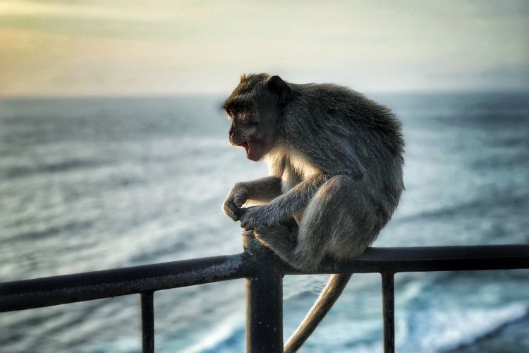

Pura Luhur Uluwatu

Pura Luhur Uluwatu atau Pura Uluwatu adalah sebuah bangunan suci tempat ibadah umat Hindu yang ada di Kabupaten Badung, Bali, Indonesia. Pura Uluwatu yang juga dikenal dengan sebutan Pura Luwur adalah salah satu dari enam Pura Sad Kahyangan, pilar spiritual utama di Pulau Bali.
Dilansir dari laman Kemendikbud, secara etimologis nama Uluwatu berasal kata “ulu” berarti ujung, atas, atau puncak, dan kata “watu” berarti batu. Jadi nama Pura Uluwatu dapat diartikan sebagai tempat suci yang dibangun di puncak batu karang.
Pura Luhur Uluwatu didirikan berdasarkan konsepsi Sad Winayaka dan Padma Bhuwana. Sebagai pura yang didirikan dengan konsepsi Sad Winayaka, Pura Luhur Uluwatu sebagai salah satu dari Pura Sad Kahyangan untuk melestarikan Sad Kertih (Atma Kerti, Samudra Kerti, Danu Kerti, Wana Kerti, Jagat Kerti dan Jana Kerti).
Sedangkan sebagai pura yang didirikan berdasarkan Konsepsi Padma Bhuwana, Pura Luhur Uluwatu didirikan sebagai aspek Tuhan yang menguasai arah barat daya. Terdapat tiga tugu Tri Murti yang merupakan tempat pemujaan Dewa Siwa Rudra.
Keunikan Pura Uluwatu
Daya tarik Pura Uluwatu bagi wisatawan tidak lain berasal dari berbagai keunikan yang dimilikinya. Salah satu keunikan Pura Uluwatu adalah lokasinya yag trletak di aas tebing dengan pemandangan ke arah samudera. Selain itu, kawasan Pura Uluwatu juga masih asri, dengan hutan yang masih dihuni oleh kelompok kera yang kerap berkeliaran di kawasan pura.

Sebagai salah satu destinasi wisata yang sangat populer di Bali, Pura Uluwatu dikenal dengan pemandangan matahari terbenam yang indah. Sehingga waktu terbaik untuk menikmati pemandangan Pura Uluwatu adalah dengan menatap siluetnya ketika matahari terbenam. Tak heran jika kemudian Pura Uluwatu disebut sebagai salah satu tempat terbaik untuk menikmati sunset di Bali.
Selain itu, di kawasan Pura Uluwatu juga terdapat hutan yang dihuni kawanan monyet serta sebuah area yang menjadi lokasi pertunjukan tari kecak. Pertunjukan tari kecak di Pura Uluwatu menjadi salah satu atraksi populer di Pulau Dewata.